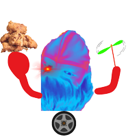

この度は、当ゲームのゲームバランス調整によりゲームデータの更新が必要という結論に至ったため以下の内容を更新させていただきました。
ご迷惑をおかけし、誠に申し訳ございませんでした。
==========経緯==========
22時ごろ アップデート開始
23時ごろ アップデート完了
現在は通常通りURLに接続すれば自動的に最新データで遊べる状態です。
ステージの調整 ブロック間の間隔を小さくし、クリアまで通行できるように修正いたしました。
新敵追加 『上山Z』を追加しました。横にキモい動きをして体当たりしてくるキモい奴です。倒せません。
『下山X』の撃破判定を緩くしました。落下中でなくてもジャンプしていれば倒すことができます。
ステージ2追加 ステージ1より敵が強くなってます。上山Zもこのステージで登場します。
